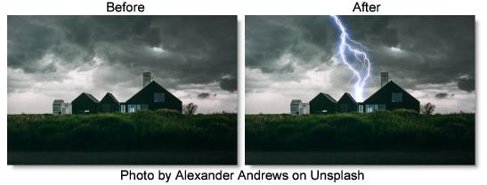

S_Zap
Description
Generates lightning bolts between two points and renders them over a background.
The S_Zap filter comes from the Emmy award winning Boris FX Sapphire filter set.
Category
Render.
Controls
Presets
To select a preset, pick one from the Presets window.
Time
The effect is advanced in time.
Mode
Selects between 2D and 3D modes.
2D
Creates a zap along a spline.
3D
Creates a three-dimensional zap.
Bolts
The number of lightning bolts to draw between the Start and End location.
Start Point
The starting point of the bolts.
Point 1 Enable
Enables Point 1.
Control Point 1
First control point.
Point 2 Enable
Enables Point 2.
Control Point 2
Second control point.
Point 3 Enable
Enables Point 3.
Control Point 3
Third control point.
Point 4 Enable
Enables Point 4.
Control Point 4
Fourth control point.
End Point
The end point of the bolts
Vary Endpoint
Offsets the End location by a random amount within a circle of this radius. If Bolts is greater than 1, this can be useful to spread out the different End points. For example, you can create multiple radiating bolts by increasing this radius and placing the End point near the Start point.
Bolt Width
The width of the lightning bolts.
Vary Width
The amount of random variation in the width of the bolts along their lengths.
End Pointiness
Determines how pointed the end of the bolts are. If 0, the entire bolt will have equal width. If 1, the bolts will thin out along their entire length for a pointed end. If it is .5, the bolts will start thinning out half way between the start and end points.
Motion/Shape
Rand Seed
Used to initialize the random number generator. The actual seed value is not significant, but different seeds produce different random lightning bolts and the same value should give a repeatable result.
Wrinkle Amp
Scales the amount of wrinkles in the bolts. Decrease for straighter, smoother bolts or increase for more kinky bolts.
Curve Amp
Similar to Wrinkle Amp but affects the general path of the bolt. If decreased, the bolt will stay closer to the line between the Start and End points. If increased, it can wander further away from this line. This differs from the Wrinkle Amp parameter in that it can be used to make straighter bolts while still keeping the wrinkles at the detailed level.
Branches
Branchiness
Scales the number of additional bolts that branch from the main bolt. Set this to 0 for basic bolts with no extra branches.
Branch Angle
The maximum angle of the random branches relative to the bolt they are branching off of. If this is 0, the branches will be more lined up with the main bolt. With larger values, the branches will be more perpendicular to the main bolt.
Branch Length
The scaled length of the branches relative to the distance between the Start and End points.
Glow Bright
Scales the brightness of the glow applied to the lightning.
Glow Color
The color of the glow applied to the lightning.
Glow Width
Glow Width
The width of the glow applied to the lightning.
Glow Width Red
The relative red width of the glow.
Glow Width Grn
The relative green width of the glow.
Glow Width Blue
The relative blue width of the glow.
Zap Bright
Scales the brightness of the lightning bolts.
Zap Color
The color of the lightning. If you want to keep the lightning bolt itself bright white, you can still affect the perceived color by adjusting the Glow Color instead.
Start Offset
The offset from the start point to begin drawing the bolts. This can be useful for animating a lightning strike.
Length
The length of the bolts beginning at Start Offset. If less than 1, the bolts will not be drawn all the way from start to end.
Bg Brightness
Scales the brightness of the image before combining with the lightning. If 0, the result will contain only the lightning over black.
Combine
Determines how the lightning and glow are combined with the image.
Screen
Performs a blend function which can help prevent overly bright results.
Add
Adds the lightning to the image. This gives brighter glows over light backgrounds.
Zap Only
Renders the lightning over black.
Atmosphere
Atmosphere Amp
Atmosphere gives the effect of the lightning shining through a dusty atmosphere and picking up light or getting shadowed. This parameter adjusts the amount, or amplitude of the atmospheric effect. 0 creates smoother lightning while higher values provide a more dirty look.
Atmosphere Freq
Controls the spatial frequency of the atmospheric noise. Turn this up higher to get finer details or turn down for broader overall variation.
Atmosphere Detail
Controls the amount of fine detail in the atmosphere simulation. Decrease to get smoother atmosphere or increase for a more crunchy, grainy look.
Atmosphere Seed
Used to initialize the random number generator for the atmospheric noise. The actual seed value is not significant, but different seeds produce different results and the same value should give a repeatable result.
3D Parameters
Show
Selects what the effect will output.
Result
Shows the normal lightning result over the background.
ZBuffer
Shows a depth map of the lightning which can be used for compositing or to control other effects.
Swivel Zap
Rotates the lightning left or right about a vertical axis.
Tilt Zap
Rotates the lightning up or down about a horizontal axis. You can use Swivel and Tilt together to rotate about arbitrary diagonal axes.
Camera Zoom
Zooms in or out on the lightning.
Glow Fade
Fades out the glow on more distant parts of the lightning.
Show Spline
Enables/disables the on-screen control for displaying the spline.
Show Vary Endpoint
Enables/disables the on-screen control for adjusting the Vary Endpoint parameter.